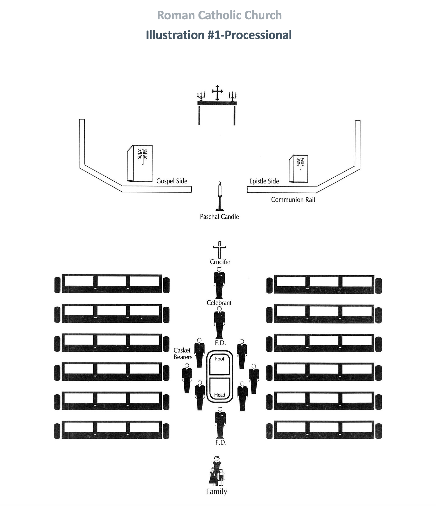

Funeral Services Interactivity
Challenge
How might we build an online interaction affording learners the ability to practice arranging funeral processionals & recessionals, that is accessible, engaging, and meaningful?
Process
My team at Florida State College at Jacksonville was tasked with designing an online course for funeral directing. Previous online course designs for funeral directing failed to provide learners an opportunity to try arranging a funeral processional & recessional themselves. This ended up being detrimental to learners upon entering the field without funeral processional & recessional arrangement practice. For this design, I worked with an instructional designer (ID), web developer, and another multimedia designer from CeL with a funeral director as our subject matter expert (SME).
-
Our challenge started with an image.
In the previous iteration of this course, learners only had this image to understand how to arrange a roman catholic processional. The SME explained how this was not effective for her learners. There was no hands-on aspect and that poses difficulties for learners to have experience arranging funeral processionals & recessionals prior to trying it on the job.
-
We started with consultations to emphasize and define the problem. We were first presented with the problem of, “this needs to be interactive”, but soon discovered the underlying issue of learners lacking experience after completing this course. This design could have been made interactive in numerous different ways, but we needed to understand the deeper issues to solve so that any interaction we designed and developed was successful.
-
Having a better understanding of the problem, we started the ideation stage to determine how best to provide an accessible, engaging learning experience. This experience needed to allow for learners to try out what they believed was correct prior to seeing the results for self-assessment. We also knew it should be low-stakes (not graded) and repeatable, so that they could continue to work on what they knew if they ever felt uncertain.
-
Our prototyping led to a fully-accessible drag-and-drop learning experience so that learners could play with the elements (necessary people and items) on the “board” (the interior of a religion building) to test their knowledge of funeral processionals & recessionals
An example of the final product: